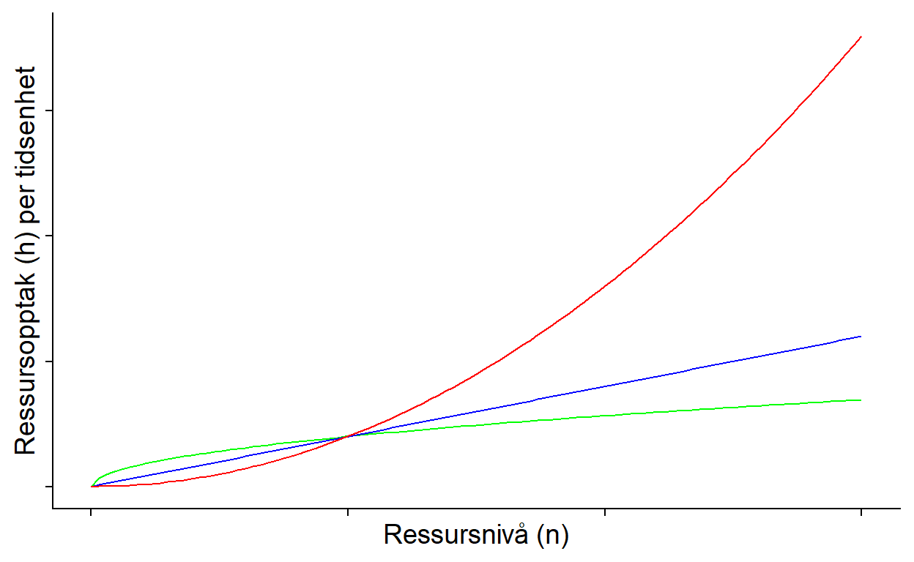
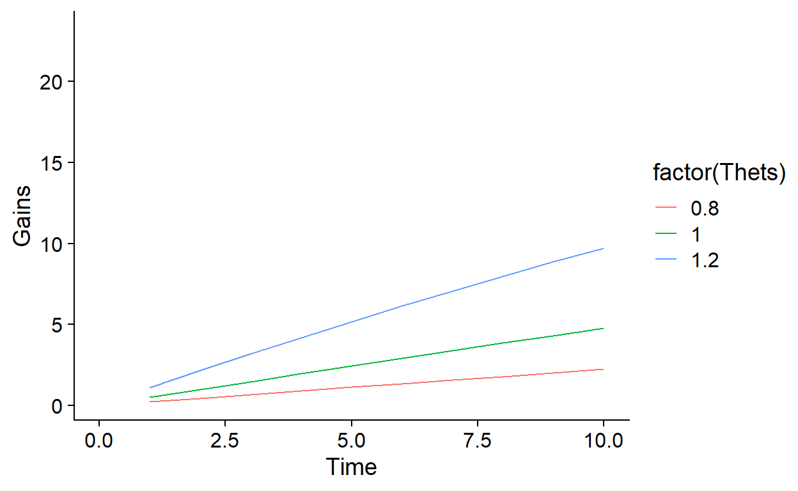
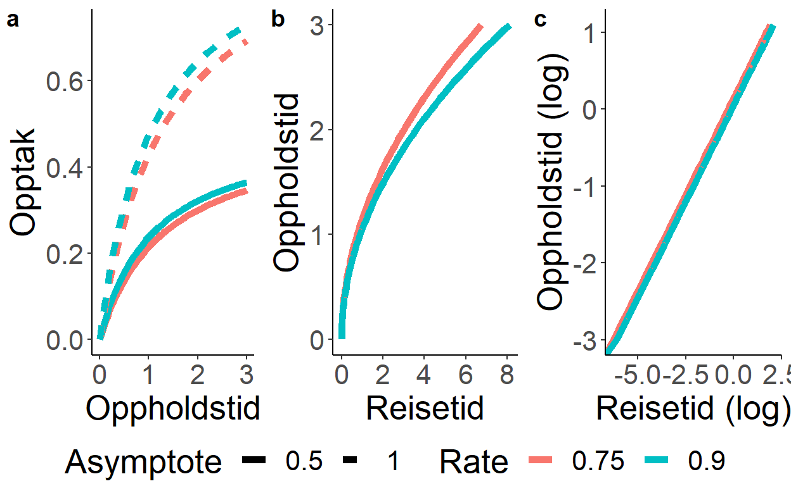
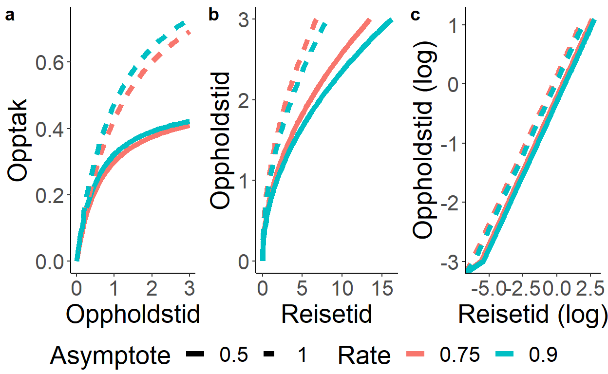

Eller hvor mye skal jeg handle når jeg handler på nærbutikken?
[KLADD]
Vi har tidligere pratet om hvordan landskapet oppfattes som en matrise hvor bare noen øyer består av gunstig habitat, og individ beveger seg mellom øyene. Men hvor lenge skal man være på en øy? Eller habitat da. Eller ‘patch’ som det kan kalles på engelsk.
library(stringr)
library(data.table)
library(ggplot2)
library(cowplot)
alpha=2
n=1000
x=rep(0,n)
y=rep(0,n)
for (i in 2:n){
theta=runif(1)*2*pi
f=runif(1)^(-1/alpha)
x[i]=x[i-1]+f*cos(theta)
y[i]=y[i-1]+f*sin(theta)
}
qplot(data = data.frame(x = x, y = y) ,y = y, x = x, geom = "path")+
theme_cowplot()+
theme(axis.text=element_blank(),axis.title=element_blank(),legend.position = "none")Figure 1: Dyr beveger seg rundt i landskapet. Noen steder oppholder de seg lengre enn andre. Hvorfor det?
Ved ankomst til habitatet så finner man innledningsvis ny mat ganske lett. Etterhvert som tiden går så blir det mindre og mindre mat igjen, og nytten av å være der øker ikke like raskt som den gjorde innledningsvis. Nytten man oppnår for hvert ekstra tidssteg, altså den marginale verdien, avtar ( se 2a).
Hvis man har brukt lang tid på å komme til habitatet må man oppholde seg der lengre for å veie opp for reisekostnadene. Men hvor mye lengre kommer an på nyttefunksjonen. I 2a viser vi to nyttefunksjoner. Den optimale oppholdstiden kan løses grafisk ved å trekke en linje fra reisetidspunktet (på venstresiden av y-aksen, negative x-verdier) til tangenten av den aktuelle nyttefunksjonen. Den optimale oppholdstiden kan da leses av på x-aksen (vertikale linjer i figur 2b). Slik at jo lengre man reiser dess lengre opphold bør man ha (figur 2c.). Med andre ord, oppholdstid er definert av \(dG(t = t^*)/dt) = G(t^*)/(T + t^*)\)
knitr::opts_chunk$set(fig.width=12, fig.height=8)
MVT = function(BetaTimeSpent=c(.15,.30),x.values = Times){
library(stringr)
library(data.table)
library(ggplot2)
x = x.values
lists = lapply(BetaTimeSpent, function(i){
fx = deriv(expr = y~x^i,"x")
bs = eval(fx)
y = bs[seq_along(x)]
tangents = attr(bs,"grad")
ints = y -tangents*x
return(data.table(x, y, Slope = tangents, Intercept = ints))})
datas = rbindlist(lists)
names(datas)[3]="Tangent"
names(datas)[4]="xIntercept"
betas = rep(BetaTimeSpent, each=length(x))
datas[,TimeBetas:=betas]
datas[,TravelTime := abs((0-xIntercept)/Tangent)]
datas = datas[is.finite(Tangent) & is.finite(TravelTime) ]
library(RColorBrewer)
set = row.names(subset(brewer.pal.info,colorblind==TRUE & category=="qual" & maxcolors>length(BetaTimeSpent)))[1]
cols = brewer.pal(length(BetaTimeSpent), set)
cols = if(length(BetaTimeSpent)<3){cols[c(1,length(cols))]}else{cols}
datas[,colr:=cols[as.numeric(as.factor(TimeBetas))]]
# So, what are we doing here?
d = table(cut(datas$TravelTime,seq(min(datas$TravelTime),max(datas$TravelTime),.5)),
datas$TimeBetas)
# For which intervals do we have estimates for all betas?
d =(apply(d, c(1,2),sign))
c = as.numeric(unlist(str_split(gsub("\\(|\\]","", names(which(rowSums(d)>=length(BetaTimeSpent))[1])),",")))
c = datas[TravelTime>=c[1] & TravelTime<=c[2]]
# Relationship btw cummulative gain, travel time and time spent in patch
#par(mfrow=c(1,2))
layout(matrix(c(1,1,2,3), 2, 2, byrow = TRUE))
# gain function
par(mar=c(0, 4.1, 1, 2.1))
with(datas,
plot(c(1:5),c(1:5),xaxt="n",
xlim = c(-(c$TravelTime[1] +20),max(x)),
#xlim=c(-max(TravelTime),max(x)),
ylim=c(0,max(y)),type="n",
ylab = "", xlab ="TravelTime/TimeSpentInPatch"))
mtext(cex=2, side = 2, text = "Opptak (kcal/tid)", line =2)
legend("topleft", "a)", cex = 1.5, bty="n")
text(-42, 2.47, expression(paste("Gain = ", Time^beta, sep = '')), pos = 2,cex=2)
abline(v = 0, lty="dashed")
for(i in 1:nrow(datas)){
try(
with(datas,abline(b = Tangent[i], a =xIntercept[i],
col= colr[i],lwd =2))
,silent=F)
}
# Illustrating how residence time with increasing quality for a given travel time
par(mar=c(5.1, 4.25, 1, 2.1))
with(c,
plot(c(1:5),c(1:5), xlim=c(-max(TravelTime),max(x)+2),ylim=c(0,max(y)),type="n",
ylab = "",
xlab ="",
xaxt="n"))
legend("topleft", "b)", cex = 1.5, bty="n")
mtext(cex=2, side = 2, text = "Opptak (kcal/tid)", line =2)
mtext(cex=1.5, side = 1, text = "Reisetid/Oppholdstid", line =2.5)
axis(side = 1, at = round(seq(-max(c$TravelTime),(max(x)+2), by = 10)), labels = abs(round(seq(-max(c$TravelTime),(max(x)+2), by = 10))))
abline(v = 0, lty="dashed")
for(i in seq_along(BetaTimeSpent)){
print(i)
curve(x^BetaTimeSpent[i], from = 0, to = max(x),add = T, col = cols[i],lwd =2)
with(c[TimeBetas==BetaTimeSpent[i]],
abline(a = xIntercept, b = Tangent, col = colr,lwd =2))
with(c[TimeBetas==BetaTimeSpent[i]],
abline(v = x, col = colr,lwd =2))
}
#abline(a = 0, b = mean(datas$Tangent),lty="dashed")
# Relationship between travel time and patch time
par(mar=c(5.1, 4.4, 1, 2.1))
with(datas,plot(log(x)~log(TravelTime), type="n",
ylab = "", xlab="",
ylim=c(min(log(x)), max(log(x))), xlim=range(na.omit(log(TravelTime)))))
for(i in seq_along(BetaTimeSpent)){
with(datas[TimeBetas==BetaTimeSpent[i]],
lines(y = log(x), x = log(TravelTime), col = colr,lwd =2)) }
mtext(cex=2, side = 2, text = "Oppholdstid (ln)", line =2)
mtext(cex=1.5, side = 1, text = "Reisetid (ln)", line =2.5)
legend("topleft", "c)", cex = 1.5, bty="n")
legend("bottomright", legend = BetaTimeSpent, lty = c(1,1), col = cols,cex = 1.5, lwd = 2, bty="n")
par(mfrow=c(1,1))
return(datas)
}
Times = seq(.5,10,.5)
a = MVT(BetaTimeSpent = c(.15,.3), x.values = Times)[1] 1
[1] 2Figure 2: Næringsopptak per tidsenhet (f.eks. minutt) minker som regel jo lengre man er i habitatet. I denne grafiske fremstillingen så er tid til venstre for y-aksen reisetid til habitatet, og til høyre er oppholdstid i habitatet. Hvor lenge et individ bør oppholde seg der er da avhenig av hvor lang tid man brukte på å reise til habitatet.
MVT_1 = function(Method = "Standard", Asymptote = c(.5,1), Rate = c(0.5,1), HalfTime = 4, Intercept = 0, HandlingTime = seq(0,10,.25)){
# Asymptote = c(.5,1); Rate = c(0.5,1.2); Intercept = 0; HandlingTime = seq(0,10,.25);HalfTime = 4;Method = "Standard"
library(gridExtra);library(data.table)
df = CJ(Asymptote = Asymptote,
Rate = Rate,
Intercept = Intercept, HandlingTime = HandlingTime)
# To find the tangents
# Computes the derivatives
x = df$HandlingTime
df$x = x
if(Method == "Standard"){
GainFunction = deriv(~Asymptote +(Intercept - Asymptote)*exp(-exp(Rate)*x),"x")
}
if(Method == "CharnovParker1995"){
#Asymptote: Gm = .5 # Proportionate to patch size
#
#Rate:
# g = .55 # Constant reflecting initial capture rate of prey
# c = g/Gm # rate of prey capture
# Handling Time = t
# GeneralGainForm = function(Gmax, c, t){ Gmax*(1-exp(-c*t))}
GainFunction = deriv(~Asymptote*(1-exp(-Rate*x)),"x")
}
if(Method=="Aastrom_1"){
# Asymptote = si = Patch size
# Rate = k1
# Handling time = Thi
# Gain = si*(1-(1/(1+(k1*Thi)))) # Eq. 1 in the paper)
GainFunction = deriv(~Asymptote*(1-(1/(1+Rate*x))),"x") # Original
GainFunction = deriv(~Asymptote -(Asymptote/(1+Rate*x)),"x") # Omskrevet
}
if(Method=="Aastrom_2"){
# Asymptote = si = Patch size
# Rate = k1
# Handling time = Thi
# Gain = si*(1-(1/(1+((k1*Thi)/si)))) # Eq. 2 in the paper)
GainFunction = deriv(~Asymptote*(1-(1/(1+(Rate*x/Asymptote)))),"x") # original fra paper
GainFunction = deriv(~Asymptote - (Asymptote^2)/(Asymptote+Rate*x),"x") # omskrevet
}
if(Method=="LogLog"){
if(any(Rate)>1){
print("Stop. Can not handle exponentially increasing gain curves, as this would imply infinite residence time.")
}
GainFunction = deriv(expr = ~exp(Intercept)*x^Rate*Asymptote,"x")
}
if(Method=="Sigmoid"){
# Gompertz
# Asymptote = 1 # asympmtote, opprinnelig a
# b: half-way, x displacement
# Rate: c
#HalfWay = mean(HandlingTime)
# print("Set halftime of the function to be equal to mean of handling times under consideration")
# Logistic function
# Asymptote/(1 + exp(-Rate*(x-HalfTime)))
GainFunction = deriv(~Asymptote/(1 + exp(-Rate*(x-HalfTime))),"x")
}
# The y - values along the x-values
bsG = eval(GainFunction, envir = df)
df$Gain = bsG[seq_along(x)]
# The derivatives
df$TangentG = c(attr(bsG,"grad"))
# And where the tangent line crosses the x-axis
df$xInterceptG = with(df, Gain -TangentG*HandlingTime)
# Gives us then enough information to find the optimal travel time
df$TravelTimeG = with(df, abs((0-xInterceptG)/TangentG))
# Second derivative
df[,SecDer:= c(NA,diff(TangentG)), c("Rate", "Asymptote")]
### PLOTS
df = data.table(df)
df[,Rate := as.factor(Rate)]
df[,Asymptote := as.factor(Asymptote)]
df[,Intercept := as.factor(Intercept)]
lsize = 2
library(ggpubr)
library(cowplot)
p1 = ggplot(data = df, aes(x = HandlingTime , y = Gain,
col = Rate,
linetype = Asymptote,
group = interaction(Rate, Asymptote, Intercept))) +
xlab("Oppholdstid") + ylab("Opptak") +
geom_line(size = lsize)+theme_classic() + theme(text = element_text(size = 20))
#
# p2 = ggplot(data = df, aes(x = HandlingTime , y = TangentG, col = interaction(Rate, Intercept), linetype = Asymptote, group = interaction(Rate, Asymptote, Intercept)))+
# xlab("Oppholdstid") + ylab("Funksjonell respons") +
# geom_line(size = lsize)+theme_classic() + theme(text = element_text(size = 20))
p3 = ggplot(data = df, aes(x = TravelTimeG , y = HandlingTime,
col = Rate,
linetype = Asymptote,
group = interaction(Rate, Asymptote, Intercept))) + ylab("Oppholdstid") + xlab("Reisetid")+
geom_line(size = lsize)+theme_classic() + theme(text = element_text(size = 20))
p4 = ggplot(data = df, aes(x = log(TravelTimeG) , y = log(HandlingTime),
col = Rate,
linetype = Asymptote,
group = interaction(Rate, Asymptote, Intercept))) +
ylab("Oppholdstid (log)") + xlab("Reisetid (log)")+
geom_line(size = lsize)+theme_classic() + theme(text = element_text(size = 20))
print(ggarrange(p1, p3, p4, ncol=3, nrow=1, common.legend = TRUE, legend="bottom", labels = "auto"))
return(as.data.table(df))
}Man har for oppholdstid \(t*\) så vil funksjonen \(G(t)\) ha stigningstall (tangent) lik \(\delta G/\delta t\)
Punktet hvor tangenten \(\delta G/\delta t\) skjærer i x-aksen er reisetid \(T_s\).
Tangenten er jo en rett linje som kan beskrives med stigningstll \(b\) og skjæringspunkt \(a\), slik at \(T_s = -a/b\). Hvor \(a = G(t = t*) - \delta G/\delta t\), og \(b = \delta G/\delta t\).
Generell løsning. \(\delta t^*\) vil være kortform for den \(\delta G/\delta t\) ved punkt \(t^*\). \[ T_s = -a/b \] \[ T_s = -(\frac{G(t = t^*) - \delta G/\delta t}{\delta t^*}) \] \[ -T_s = t^* - \frac{G(t = t^*)}{\delta t^*} \] \[ -T_s = -t^* + \frac{G(t = t^*)}{\delta t^*} \] \[ T_s = t^* - \frac{G(t = t^*)}{\delta t^*} \]
En annen måte å skrive det vil være å se på det som et log-log-forhold.
Antall enheter inntak kan beskrives som Poisson-prosess. Poisson kan brukes til modellere proportional hazard-modeller1, som er brukt til å modellere hvor lenge individ skal være i et område.2 Ved å bruke log-tid (\(\beta_{log-tid}\)) som forklaringsvariabel på opptak kan responsen tolkes som en rate. I MVT antar en avtagende utbytte, slik at \(\beta_{log-tid}<1\). - https://ntnuopen.ntnu.no/ntnu-xmlui/bitstream/handle/11250/2977833/CarlsenRecoveryAnimBehav2021hybrid.pdf?sequence=1
I studier som går på habitatbruk legger man ofte til areal tilgjengelig habitat som offset for å se på hvordan bruken avviker fra tilgjengelighet. Ved å legge det til som en offset så antar man at opptak skal øke proporsjonalt med areal altså habitatvalg. Tilsvarende kan man også gjøre her.
\(log(Opptak) = \beta_{Rate} * log(Areal\)
Ved å legge til \(log(Areal)\) vil det endelige uttrykket være \(Opptak = Areal^{\beta_{areal}}*Tid^{\beta_{tid}}\).
Og hvis areal er lagt til som en offset vil \(\beta_{areal}=1\), slik at
\(Opptak = Areal*Tid^{\beta_{tid}}\)
\[ T_s = t^*- \frac{t^{*\beta}}{\beta t^{*\beta - 1}} \] Som forenkles til \[ T_s = t^*- \frac{t^{*}}{\beta} \]
\[ T_s = t^* (1 - \frac{1}{\beta}) \] \[ \frac{T_s}{1-\frac{1}{\beta}} = t^* \]
Lévy walk blir av noen ansett som en egenskap som oppstår som et resultat av omstendighetene (‘emergent property’) og ikke en egenskap i seg selv. Men er vist i flere som regel som en strategi som er optimal, uavhengig av omstendighetene:
Nedenfor ser vi også såvidt på relasjonene mellom oppholdstidlibrary(data.table)
library(ggplot2)
library(spatstat)
library(doParallel)
no_cores <- detectCores() - 1
cl <- makeCluster(no_cores)
registerDoParallel(cl)
Betas = seq(.3,.9, length.out = 5)
tmax = 700
BetasRun = list()
#BetaRuns = lapply(c(.3,.75,.9), function(d){#lapply-versjon
# foreach(dd = seq_along(Betas), .packages = (.packages())) %dopar% {
# d = Betas[dd]
# print(d)
#
# DoPlot = F
# nRuns = 50
# if(!file.exists(paste0("Runs_",d,".rds"))){
# Runs = rbindlist(lapply(nRuns:1, function(run){
# print(run)
# set.seed(run)
#
# # Deviation from optimal
# deviation = sample(seq(-10,10,5),1)
# #deviation = seq(-10,10,5)
# #Run time and population
# tmax = tmax
# nInd = 1
#
# ## Make grid
# maxD = 2500
# densP = 0.6 # tetthet av mat
# nP = floor(maxD*(densP)) # antall matlokasjoner
# Y = X = seq(0,maxD, by = 1)
#
# # Box size
# sizeP = 20
# Radii = rep(sizeP, nP)
#
# Grid = TRUE
# if(Grid==TRUE){
# uns = seq(0,maxD, Radii[1])+Radii[1]/2
# SampleGrid = expand.grid(uns,uns)
# plotsC = SampleGrid[sample(1:nrow(SampleGrid), nP),]
#
# plots = lapply(1:nrow(plotsC), function(x){
# bbox = rbind(x = c(plotsC[x,1]-Radii[1]/2, plotsC[x,1]+Radii[1]/2),
# y = c(plotsC[x,2]-Radii[1]/2, plotsC[x,2]+Radii[1]/2))
# #rect(plots[[x]][1,1], plots[[x]][2,1], plots[[x]][1,2], plots[[x]][2,2])
# bbox
# })
# }else{
# # Create initial kernels
# cP = 1
# plotsC = matrix(round(runif(1*2,
# min = 0, max = maxD)),
# ncol = 2)
# plots = list()
# plots[[cP]]<-rbind(x = c(plotsC[cP,1]-Radii[cP],
# plotsC[cP,1]+Radii[cP]),
# y = c(plotsC[cP,2]-Radii[cP],
# plotsC[cP,2]+Radii[cP]))
# while(cP<nP){
# # Generer en ny en
# t1 = matrix(round(runif(1*2, min = 0, max = maxD)), ncol = 2)
# # Er den nye for nærme noen eksisterende?
# a = as.matrix(dist(rbind(t1,plotsC)))[-1,1]
# # Hvis nei, bygg boksen
# bnd = sqrt(Radii[1]^2 + Radii[1]^2)*2
# if(!any(a<bnd)){
# t2 = rbind(x = c(t1[1,1]-Radii[1], t1[1,1]+Radii[1]),
# y = c(t1[1,2]-Radii[1], t1[1,2]+Radii[1]))
#
# cP <- cP + 1
# plots[[cP]]<-t2
# plotsC <-rbind(plotsC,t1)
# }
# }
# }
#
# if(DoPlot){
# plot(1~1, type = "n",
# xlim = c(-20,maxD+20), ylim = c(-20, maxD+20))
#
# lapply(seq_along(plots), function(x){
# rect(plots[[x]][1,1],
# plots[[x]][2,1],
# plots[[x]][1,2],
# plots[[x]][2,2])
# })
# }
#
# ####
# # Exponent of the gain curve
# Betas = d#.75 #runif(nInd, min = 0.1, max = .90)
#
# Stay = rep(0, nInd)
# Arrival = rep(0, nInd)
# Residence = rep(0, nInd)
#
# Gains = rep(0, nInd)
# Gained = Gains
#
# # generate random start locations for the individuals
# set.seed(run)
# pos = t(sapply(1:nInd, function(x) round(runif(2, min = maxD*0.45, max = maxD*.55))))
#
# #pos = matrix(c(30,40), ncol = 2)
# DF = array(0,dim = c(tmax, 8, nInd),
# dimnames = list(c(1:tmax),
# c("State", "Box", "ResidenceTime", "Traveltime","Gain","PosX", "PosY", "Dist"),
# c(1:nInd)))
# DF[1,"Traveltime",]<-0# round(runif(nInd, min = 4, max = 10))
# class(DF[,"Traveltime",])<-"numeric"
#
# # Merk den gjennomsnittlige steg lengden er kortere enn lengden/bredden av en foraging box
# Moves = function(Mode = "Levy", alpha = 2, n = 1){
# t(sapply(1:n, function(x){if(Mode == "Levy"){
# dist = 0
# while(dist==0 | dist>500){# For å forhindre kjempelange steg
# dist = runif(1)^(1/(1 - alpha)) # Alternativ https://rdrr.io/cran/adehabitatLT/src/R/simm.levy.r
# }
#
# angle = runif(1)*2*pi
#
# dx = dist * sin(angle)
# dy = dist * cos(angle)
# }else{
# dx = rnorm(n = 1, mean = 0, sd = 5)
# dy = rnorm(n = 1, mean = 0, sd = 5)
# }
# c(dx,dy)}))
# }
#
# t = 1
# while(t < tmax){
#
# inBox = apply(pos, 1, function(x){
# sapply(plots, function(P){
# x[1] %between% P[1,] & # x-coordinate
# x[2] %between% P[2,]# y-coordinate
# })
# }, simplify = T)
#
# # Evaluate whether individuals are in boxes or not
# for(cols in 1:ncol(inBox)){
# DF[t,c("PosX", "PosY"),cols]<-pos[cols,]
# # in a box, and should stay there longer
# # if(any(inBox[,cols])){print("In box")}
# if(any(inBox[,cols]) & Arrival[cols]==0){
# # First time landed in plot
# Arrival[cols] <- t
# # gets no food on arrival
# # How long should the individual remain in the box
# RT = round(as.numeric(DF[t,"Traveltime",cols])/(1 + (1/Betas[cols])))
#
# RT = RT + (RT/100*deviation)
#
# DF[t,"ResidenceTime",cols] <- RT
# Stay[cols] <- t+as.numeric(DF[t,"ResidenceTime",cols])
#
# DF[t,"State",cols]<-"Arrival"
# # Which box is individual in?
# DF[t,"Box",cols]<-min(which(inBox[,cols]))
# }
#
# if(any(inBox[,cols]) & Arrival[cols]<t){
# # Is in plot from previous round, and we have passed the arrival time
#
# # Which box is individual in?
# DF[t,"Box",cols]<-min(which(inBox[,cols]))
#
# # How long have the individual been in the plot
# ResidenceTime = as.numeric(DF[(t-1),"ResidenceTime",cols])
# # How much to gain?
# Gains[cols] <- Gains[cols] + ((ResidenceTime^Betas[cols])-((ResidenceTime-1)^Betas[cols]))
# #print(Gains[cols])
# DF[t,"ResidenceTime",cols]<-as.numeric(DF[(t-1),"ResidenceTime",cols])-1
# DF[t,"State",cols]<-"Forage"
#
# # Reset travel time since you have stayed in a box
# DF[t,"Traveltime",cols]<-0
# }
#
#
# # Move individuals
# for(cols in 1:ncol(inBox)){
# DF[t,"Gain", cols]<-(Gains[cols])
# if(DoPlot){
# # plot positions
# points(pos[cols,2]~pos[cols,1],
# cex = 2,
# pch = ifelse(DF[(t-1),"State",cols]=="Movement",15,17),
#
# col = ifelse(any(inBox[,cols]), "green", "red"))
# }
#
# # Only move those who are outside of box, or spent too much time in box
# if(!any(inBox[,cols]) | DF[t,"ResidenceTime",cols]==0){
#
# DF[t,"State",cols]<-"Movement"
# # Reset arrival as we have started to move again
# Arrival[cols] <- 0
#
# # If in a box, move it to the edge to ensure movement away from box
# if(any(inBox[,cols])){
#
#
# tmp = plots[[min(which(inBox[,cols]))]]
# pos[cols,] <-round(c(runif(1,tmp[1,1],tmp[1,2]),
# runif(1,tmp[2,1],tmp[2,2])))
#
# # Include a while-loop, to run as long as the individual remains inside. this way to ensure movement away from the patch
# while(any(sapply(plots, function(P){
# pos[cols,][1] %between% P[1,] & # x-coordinate
# pos[cols,][2] %between% P[2,]# y-coordinate
# }))){
# dist = Moves()
# pos[cols,] = round(pos[cols,] + dist)
# }
# }else{
# dist = Moves()
# pos[cols,] = round(pos[cols,] + dist)
# }
# DF[t,"Dist",cols]<-sqrt(sum(dist^2))
#
# # Increase travel time for those who are not in boxes
# DF[t+1,"Traveltime",cols]<-as.numeric(DF[t,"Traveltime",cols])+1
# }
# }
#
# # If moving outside the grid, relocate to new random place
# for(cols in 1:nInd){
# if(any(pos[cols,]>maxD) | any(pos[cols,]<0)){
# pos[cols,]<-runif(2, min = maxD*0, max = maxD*1)
# }
# }
# #print(DF[t,"Gain", ])
# #Gained = rbind(Gained, Gains)
# t = t + 1
# }
#
# }
# DT = data.table(DF[,,1])
# DT[,Deviation:=deviation]
#
# DT[,Run:=run]
# DT[,Beta := Betas[1]]
# ddd = dist(plotsC)
#
# DT[,DistanceBtwPlots_median:=median(ddd)
# ][,DistanceBtwPlots_var:=var(ddd)
# ][,DistanceBtwPlots_clustering:=mean(nndist(ddd, k = 1))
# ]
# gc() # Clear memory
# DT
# #with(DT[State=="Arrival"], plot(ResidenceTime~Traveltime))
# #list(Gains = Gains, Deviation = deviation, Decisions = Decisions)
# }))
# gc() # Clear memory
# saveRDS(Runs, file = paste0("Runs_",d,".rds"))
# } else {
# Runs = readRDS(file = paste0("Runs_",d,".rds"))
# }
#
# BetasRun[[dd]]<<-Runs
# Runs
# }
# stopCluster(cl)
BetasRun = lapply(Betas, function(d){
Runs = readRDS(file = paste0("Runs_",d,".rds"))
Runs
})
#}) #lapply-versjon
#BetaRuns2 = rbindlist(BetaRuns) # for lapply v
BetaRuns2 = rbindlist(BetasRun)
BetaRuns2[,Time:=1:.N, c("Run", "Beta")]
BetaRuns2[,Traveltime:=as.numeric(Traveltime)]
BetaRuns2[,ResidenceTime:=as.numeric(ResidenceTime)]
BetaRuns2[,Gain := as.numeric(Gain)]
BetaRuns2[,Beta := factor(Beta)]
BetaRuns2[,Deviation := factor(Deviation)]ggplot(data = BetaRuns2[,.SD[which.max(Gain)], c("Beta", "Deviation", "Run")],
mapping = aes(col = factor(Beta)))+
stat_smooth(mapping = aes(x = DistanceBtwPlots_clustering,
y = ResidenceTime), method = "lm")+
ylab("Oppholdstid")+
xlab("Avstand til nærmeste nabo (gj.snitt)")+
labs(col = "Nyttefunksjon")df = BetaRuns2[,.(Gain=max(Gain,na.rm = T), ResidenceTime = mean(ResidenceTime)),
c("Beta", "Deviation", "Run", "DistanceBtwPlots_clustering","DistanceBtwPlots_var","DistanceBtwPlots_median")]
library(lme4);library(MuMIn)
df[,CV:=DistanceBtwPlots_var/DistanceBtwPlots_median]
# summary(df)
# dredge(lmer(log(Gain)~CV*Beta +
# ResidenceTime*Beta +
# DistanceBtwPlots_clustering*Beta +
# log(DistanceBtwPlots_median)*Beta +
# Deviation +
# (1|Run), data = df, na.action = na.fail, REML = F)
# #, fixed = c("Deviation")
# )Hvis et individ kommer inn i habitatet og bruker litt tid på å orientere seg om hva som er den mest nyttige maten før den spesialiserer seg inn på denne. En kan da ende opp med en sigmoid nyttefunksjon (Searle et al. (2005), Spalinger and Hobbs (1992) likning 30).
\(G(t) = \frac{\alpha\cdot t^2\cdot M}{\alpha\cdot t^2 + M}\)
ALPHA = .002
BioMass = 0.382
ggplot() +
xlim(0, 40)+
geom_function(fun = function(x)
(ALPHA*BioMass*x^2)/(BioMass + ALPHA*x^2)
)+
theme_cowplot()+
theme(axis.text=element_blank(),axis.title=element_blank(),legend.position = "none")Figure 3: Sigmoide nyttefunksjon.
Den deriverte av nyttefunksjonen i \(t^*\) er lik langtidsnytten. I MVT optimum \(t^*\), som gitt over, så er nyttefunksjonen sin andrederiverte < 0. For nyttefunksjoner som ikke er konkav (-opp) så vil ikke den generelle påstanden over om at å forbedre kvaliteten på habitatet øke oppholdstiden gjelde (Calcagno et al. (2014), fantastisk artikkel som man aldri kan få nok av). Da vil oppholdstiden bli kortere og individ vil bruke mer tid på å bevege seg mellom habitat.
I heterogene miljø er snittet angitt som \(<y_j>\). \(s\) ulike miljø med frekvens \(p_i\)
Likning 11 fra Calcagno 2013/2014
\[\frac{dt^*}{dx} = -E_n^*(\frac{\delta}{\delta x}ln\frac{\delta F(x,t^*)}{\delta t} - \frac{\delta ln E_n^*}{\delta x})(\frac{\delta^2F(x,t^*)}{\delta t^2})^{-1}\]
Likning 8
\[\frac{\delta\space ln E^*_n}{\delta x_i} = \frac{\delta ln <F_j (x_j ,t^*_j>}\]
#h(n) # Opptak per ressursnivå n
#h(n) = n^theta
ggplot() +
xlim(0, 3)+
geom_function(fun = function(x)
x^.5, col = "green")+
geom_function(fun = function(x)
x^1, col = "blue")+
geom_function(fun = function(x)
x^2, col = "red")+
theme_cowplot()+
theme(axis.text=element_blank(),legend.position = "none")+
xlab("Ressursnivå (n)")+ylab("Ressursopptak (h) per tidsenhet")
# Time t
# eat h(t)
# deplete resource by n = -h(n)/S
Forage = function(n, theta = 2/3, S = .01){
S*(n^theta)
}
Deplete = function(n0, theta = 2/3, S = .01){
n0-S*(n0^theta)
}
Gain = function(time, Resource = 50, theta = 3/2, PatchCost = .1, TravelCost = .4, Travel = 1,...){
Gains = 0
Gains = Gains - TravelCost*Travel
for(i in 1:time){
if(Resource>0 & !is.nan(Resource)){
Gains = Gains + Forage(n = Resource, theta = theta,...)
Resource = Resource = Deplete(n0 = Resource, theta = theta,...)
}
Gains = Gains-PatchCost
}
c(Gain = Gains, Resource = Resource, PatchCost = PatchCost*time)
}
library(data.table);library(ggplot2);library(cowplot)
tmp = CJ(Time=1:30,
Resources = c(50),
Thets = c(.8,1,1.2))
tmp[,idx:=1:.N]
tmp[,Gains:=Gain(time = Time, PatchCost = .001, Travel = 0,
Resource = Resources, theta = Thets)[1], by = idx]
ggplot(data = tmp, aes(x = Time, y = Gains, col = factor(Thets), shape = factor(Resources))) +
xlim(0, 10)+
geom_line()+
theme_cowplot()
Nå tar vi utgangspunkt i nyttefunksjonen fra likning 2 Sih (1980).
\[G(t) = \frac{G_{max}t}{d + t}\] I denne studien har vi byttet ut \(c\) med \(d\), da \(d\) er invers av hvordan vi har tolket raten tidligere.
\[\frac{\delta}{\delta t} = \frac{dG}{(d+t)^2}\]
\[T_s = t - \frac{\frac{G_{max}t}{d + t}}{\frac{dG}{(d+t)^2}}\]
\[T_s = t - \frac{t(d+t)}{d}\] \[ t = \sqrt{dT_s}\] \[ T_s = \frac{t^2}{d}\]
\[G(t) = \frac{G_{max}t}{dG_{max} + t}\] \[\frac{\delta}{\delta t} = \frac{dG^2}{(dG+t)^2}\] \[T_s = t - \frac{t(dG_{max}+t)}{G_{max}d}\]
Nyttefunksjoner kan utformes på svært mange måter, men i praksis så ser man at de fleste er avtagende (dvs. deakkselererende eller konveks).
I praksis vil man ofte være interessert i hva skjer om en bedrer habitatet for arten. Noen slik nytte-funksjoner bedrer habitatkvaliteten ved å øke asymptoten (se likning #eq:EQ1). Dette kan sammenlignes med å f.eks. doble mengden mat i habitatet. Men da har man sett at dette, i teorien, ikke har påvirket hvor lenge et individ bør oppholde seg der (Charnov and Parker 1995; Ranta et al. 1995; Livoreil and Giraldeau 1997).
\[ F(t) = Asymptote - \frac{Asymptote}{1 + Rate\cdot t} \tag{1} \]

\[ F(t) = Asymptote - \frac{Asymptote^2}{Asymptote + Rate\cdot t} \tag{2} \]
Forskjeller mellom disse er at likning (1) antar at prosent opptak er uavhengig av størrelsen på habitatet. Det vil si at en elg vil spise opp 20 % av en treklyngen på 10 minutt, uavhengig om treklyngen består av 10 eller 40 trær. Og det henger jo nøvendigvis ikke helt på greip. I likning (2) vil håndteringstiden øke med habitatstørrelsen, dvs. kurven blir flatere, og for de 10 minuttene så vil elgen ha spist en mindre andel av en stor klynge enn en liten klynge.
Videre vil opptaket i starten være variere habitatstørrelsen i (1), men ikke i (2).

Med utgangspunkt i nyttefunksjonene presentert som likning 1 i Astrom, Lundberg, and Danell (1990).
\[ G(t) = S_i(1 - \frac{1}{1 + kt}) \]
og \[ \frac{\delta G}{\delta t} = \frac{ks}{(1 + kt)^2}\]
Vi setter dette inn i det generelle løsningen over. \[ T_s = t^*- \frac{s(1-\frac{1}{1 + kt})}{\frac{ks}{(1 + kt)^2}}\]
\[ T_s = t^*- \frac{((1-kt)^2)(s - \frac{s}{1 - kt})}{ks} \] \[ T_s = t^* - t^*(kt^*-1) \] \[ T_s = t^* - kt^{*2} - t \]
\[ T_s = kt^{*2} \] \[ \sqrt{\frac{T_s}{k}} = t^* \]
Med utgangspunkt i nyttefunksjonene presentert som likning 2 i Astrom, Lundberg, and Danell (1990).
\[ G(t) = S_i(1 - \frac{1}{1 + \frac{kt}{S_i}}) = S - \frac{S{_i}^2 }{S_i + kt} \] og \[ \frac{\delta G}{\delta t} = \frac{kS_{i}^2}{(kt + S_i)^2} \]
Vi setter dette inn i det generelle løsningen over.
\[ T_s = t - \frac{S - \frac{S{_i}^2 }{S_i + kt}}{\frac{kS_{i}^2}{(kt + S_i)^2}} \] Og forenkler denne til
\[ T_s = \frac{(-1)kt^2}{S} \]
Som vi løser for \(t\)
\[-\frac{S_{i}T_{s}}{k} = t^2 \]
Alternativt, ved å gå tilbake til den generelleløsningen så kan \(b\) også skrives som \(b = G(t)/[t^* + T_s]\).
Hvis man bruker den, så vil \(T_s = T_s + t\)
\(t = T_s/2\)